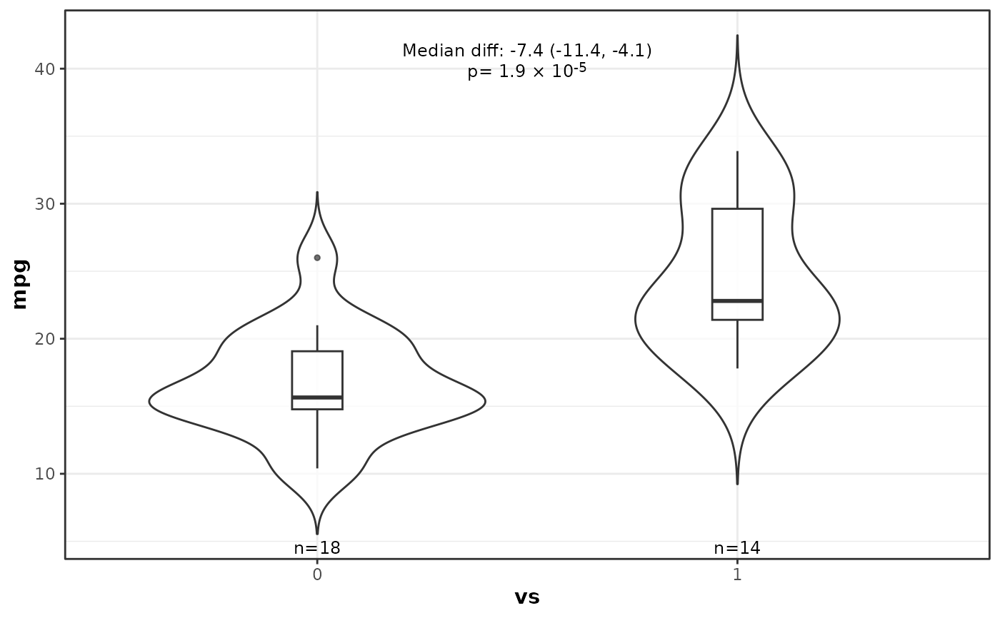
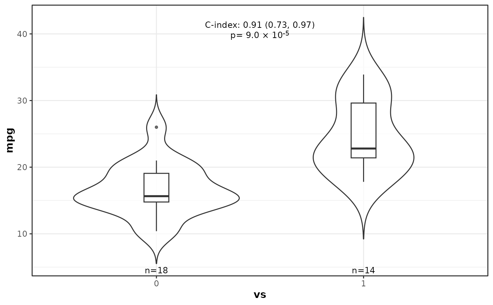
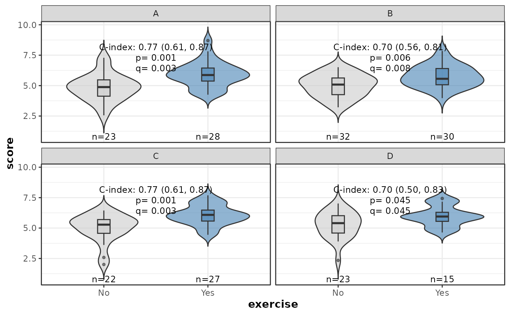

Compare a numeric variable between two groups with violins/boxplots and Wilcoxon test
Source:R/plot_numeric_by_2groups.R
plot_numeric_by_2groups.RdCompare a numeric variable between two groups with violins/boxplots and Wilcoxon test. Returns the ggplot object and a tidy Wilcoxon result. Optionally you can facet by additional variables.
Usage
plot_numeric_by_2groups(
yvar,
group,
d,
colors = c("white", "white"),
digits = ifelse(effect_size == "median_difference", 1, 2),
alpha = 0.7,
effect_size = c("median_difference"),
facet_cols = NULL,
facet_pvalue = "both",
text_effectsize_vjust = 1.5,
text_n_vjust = -0.4,
text_effectsize_prefix = ifelse(effect_size == "median_difference", "Median diff: ",
"C-index: ")
)Arguments
- yvar
character(1) Name of the numeric outcome column in
d.- group
character(1) Name of the factor column in
d(must have 2 levels).- d
data.frame Data containing
yvarandgroup.- colors
character vector Length-2 vector of fill colours (default c('white', 'white')); if NULL the default ggplot2 fill scale is used. When supplied, must be a character vector with length equal to the number of groups (two after filtering); if it has names, they must exactly match the factor levels.
- digits
numeric(1) Number of decimal places to use in effect size results.
- alpha
numeric(1) Fill transparency for violin and boxplot geoms, passed to the
alphaargument ofggplot2::geom_violin()andggplot2::geom_boxplot(). Values range from 0 (fully transparent) to 1 (fully opaque). Default0.7.- effect_size
character(1) Type of effect size to compute. Either
"median_difference"(default; Hodges-Lehmann estimate of location shift) or"c_index"(concordance probability usingasht::wmwTest).- facet_cols
character vector of column names to facet by. Default
NULL(single panel).- facet_pvalue
character(1) When
facet_colsis supplied, which p-value information to display in annotations. One of "pvalue", "qvalue", or "both" (default). Q-values are always computed whenfacet_colsis supplied using FDR correction.- text_effectsize_vjust
numeric(1) Vertical justification for the effect size annotation text (used when
facet_colsis supplied). Default1.5.- text_n_vjust
numeric(1) Vertical justification for the sample size annotation text (used when
facet_colsis supplied). Default-0.4.- text_effectsize_prefix
character(1) Prefix text for the effect size annotation. Default
"Median diff: ".
Value
A list with elements:
- ggplot
A ggplot2 object (violin + boxplot). Add
+ ggplot2::facet_wrap()or+ ggplot2::facet_grid()to create multi-panel layouts; annotations facet automatically.- wilcox
A tibble with the Wilcoxon test results (from
broom::tidy). Whenfacet_colsis supplied the tibble includes the faceting column(s) identifying which facet each row belongs to.
Details
When facet_cols is supplied, a separate Wilcoxon test is run within
each unique combination of those columns and per-panel p-value and sample
size annotations are prepared automatically. The annotation layers retain
the faceting columns so that adding + ggplot2::facet_wrap() or
+ ggplot2::facet_grid() after the function call correctly splits both
violins and annotations across panels.
Examples
ggplot2::theme_set(theme_bw2())
mtcars$vs <- factor(mtcars$vs)
# Basic example
res <- plot_numeric_by_2groups("mpg", "vs", mtcars)
res$ggplot

res$wilcox
#> # A tibble: 1 × 8
#> estimate statistic p.value conf.low conf.high method alternative outcome
#> <dbl> <dbl> <dbl> <dbl> <dbl> <chr> <chr> <chr>
#> 1 -7.35 22.5 0.0000195 -11.4 -4.10 Wilcoxon … two.sided mpg
# Show C-index effect size instead of median difference
plot_numeric_by_2groups(
yvar = "mpg",
group = "vs",
d = mtcars,
effect_size = "c_index"
)
#> $ggplot

#>
#> $wilcox
#> estimate statistic p.value conf.low conf.high
#> 1 0.9107143 NA 9.034472e-05 0.731417 0.9725219
#> method
#> 1 Wilcoxon-Mann-Whitney test with continuity correction\n (confidence interval requires proportional odds assumption, but test does not)
#> alternative outcome
#> 1 two distributions are not equal mpg
#>
# Faceted example: compare a "score" between exercisers and non-exercisers,
# faceted by group (A/B/C/D)
set.seed(42)
n <- 200
df <- data.frame(
score = c(rnorm(n / 2, mean = 5), rnorm(n / 2, mean = 6)),
exercise = factor(rep(c("No", "Yes"), each = n / 2)),
group = factor(sample(LETTERS[1:4], n, replace = TRUE))
)
res_facet <- plot_numeric_by_2groups(
yvar = "score",
group = "exercise",
d = df,
facet_cols = "group",
colors = c("No" = "grey80", "Yes" = "steelblue"),
alpha = 0.6,
effect_size = "c_index"
)
res_facet$ggplot + ggplot2::facet_wrap(~group, ncol = 2)

res_facet$wilcox
#> estimate statistic p.value conf.low conf.high
#> 1 0.6956522 NA 0.045404066 0.5039796 0.8323004
#> 2 0.7686335 NA 0.001093133 0.6119982 0.8705328
#> 3 0.7041667 NA 0.005890878 0.5599704 0.8127648
#> 4 0.7693603 NA 0.001345610 0.6091259 0.8726552
#> method
#> 1 Wilcoxon-Mann-Whitney test with continuity correction\n (confidence interval requires proportional odds assumption, but test does not)
#> 2 Wilcoxon-Mann-Whitney test with continuity correction\n (confidence interval requires proportional odds assumption, but test does not)
#> 3 Wilcoxon-Mann-Whitney test with continuity correction\n (confidence interval requires proportional odds assumption, but test does not)
#> 4 Wilcoxon-Mann-Whitney test with continuity correction\n (confidence interval requires proportional odds assumption, but test does not)
#> alternative outcome group qvalue
#> 1 two distributions are not equal score D 0.045404066
#> 2 two distributions are not equal score A 0.002691219
#> 3 two distributions are not equal score B 0.007854504
#> 4 two distributions are not equal score C 0.002691219